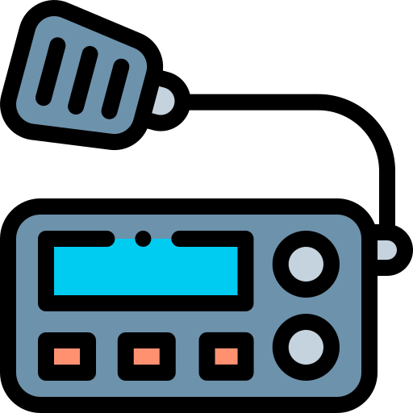
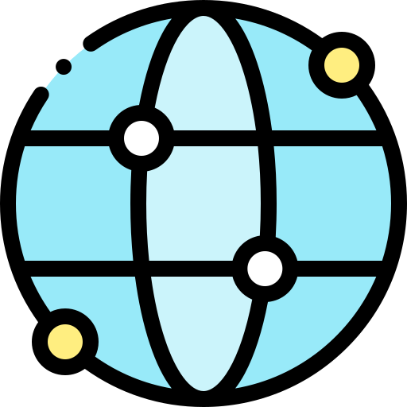
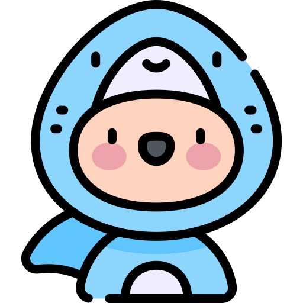

B
G
6
Q
E
D
很高興
與您
通聯，
超開心
啦～
希望
訊號
永遠
5
9
9
空中
常見
老朋友
73！
Nice
to
QSO
with
you!
Hope
signal
always
5
9
9!
See
you
often
on
the
air,
O
M
73!
貴方
と
QSO
できて
とても
嬉しい!
信号
が
いつも
5
9
9
で
あります
ように。
空中
で
また
会い
ましょう、
古い
友人。
73!


🔗
友台链接
友台链接
×
BD8FTC的blog站
BD8FTC的blog站
BG4JHP主页
一个业余无线电爱好者的主页